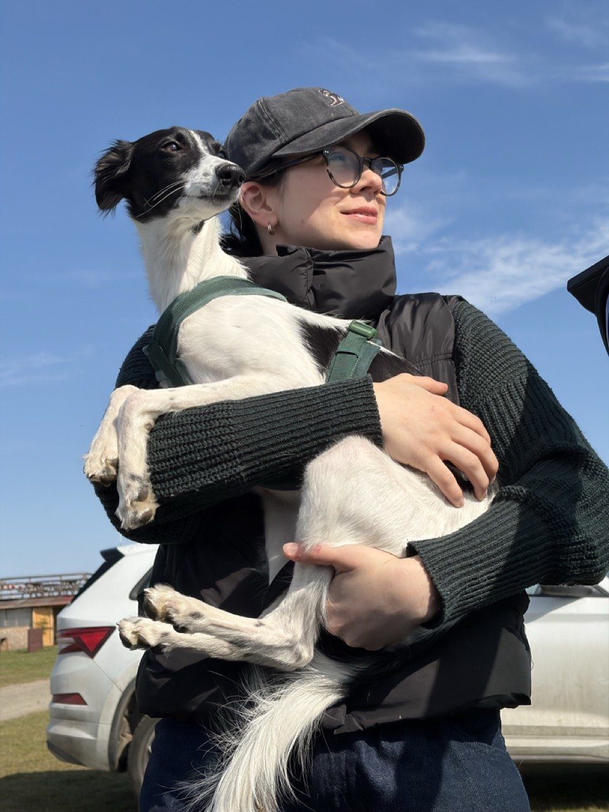

Data · Prague transit · a series
Weather
on the rails
How delays differ in rain and heat on Prague's trams and buses, asked the same way of the same 121 million stop passes, each question pre-specified (self-timestamped) before the weather met the data.
Photo: Aktron · CC BY-SA 4.0, toned

Data · Prague · a series in five parts
Prague,
measured
Studies of one city from the data it publishes about itself: how its City Assembly votes, how its precincts vote in national elections, how it funds its districts, how housing moves from permit to completion, and how it prices kerb space.
Photo: ŠJů · CC BY-SA 3.0, toned

Data · pop music · a series in six parts
Pop,
measured
Five artists measured the same way, from Spotify's charts and their tours. Songs lasted longer where their artist's market language is spoken, an association carried most by one Spanish song, and ticket prices varied little with local incomes.
Photo: Anthony Delanoix · CC0, toned
Master's thesis · IES Director's Award 2026
Persistence
On 121 million stop-pass records from Prague, within-day bus and tram delays are persistent, and for a traveller who can observe the current delay state, standard appraisal overstates the cost of unreliability.
Photo: Draceane · CC BY-SA 4.0, toned
.jpg){kind=link}
Photo: rawpixel · CC0, toned

About
Data and cloud engineer, Prague
Barbora Šandová is a data and cloud engineer at Alma Career in Prague, where she works on a cross-cloud data platform and on LLM assistants over its warehouse. Her research interests are the applied econometrics of urban systems and the evaluation of LLM systems that answer questions over data. Her master's thesis on the persistence of public transport delays in Prague received the IES Director's Award for Distinguished Theses at Charles University in 2026.How the studies here are planned: what “pre-specified” means
Latest
By topic- Are planes over Czechia reporting bad GPS?Aircraft cruising over Czechia reported degraded satellite positions about as often as over Austria and Switzerland, at most a point more, while over Poland and the Baltic states they reported them more often.Registered studyOct 2026
- Do bypasses make towns safer?Inside 35 Czech towns, police recorded about a fifth fewer injury crashes after a bypass opened than in towns still waiting, but with so few towns the data can't rule out no change at all.Registered studyOct 2026
- Do big factories bring jobs to the jobless?After 34 promises of 300 or more jobs, the district's unemployment barely moved, and there was too little data to tell a small fall from a small rise.Registered studyOct 2026
- Does Czech spending follow what worries people?When more Czechs named a topic among the country's two biggest problems, its share of spending did not follow, and the Chamber talked about it only a little more, in one model.Registered studyOct 2026
- Did Czechia change its UN votes with each government?Under three governments Czechia sided with the EU majority on 94.8 to 97.6 % of UN votes, with no registered shift (inconclusive, then underpowered), and fewer yes votes on Israel and Palestine were seen only afterwards.Registered studyin progressOct 2026
- The day Prague's trams stoppedWhen the Czech grid split at noon on 4 July 2025, 56 % of Prague's tram service stood still, half of it was moving again by 13:30 and nine tenths by 15:00.Registered studyOct 2026
By topic
Getting around
Trams, buses, roads and the air over Czechia, and how forecasts for them are checked.
- Are planes over Czechia reporting bad GPS?Aircraft cruising over Czechia reported degraded satellite positions about as often as over Austria and Switzerland, at most a point more, while over Poland and the Baltic states they reported them more often.Registered studyOct 2026
- Do bypasses make towns safer?Inside 35 Czech towns, police recorded about a fifth fewer injury crashes after a bypass opened than in towns still waiting, but with so few towns the data can't rule out no change at all.Registered studyOct 2026
- The day Prague's trams stoppedWhen the Czech grid split at noon on 4 July 2025, 56 % of Prague's tram service stood still, half of it was moving again by 13:30 and nine tenths by 15:00.Registered studyOct 2026
- Running lateHalf of the tram delay builds up on a tenth of the track, trams of a line barely close in on each other (inconclusive), and connecting lines share delays only slightly, against expectations.SeriesOct 2026
4 parts
- Part 1 · Where do Prague's trams fall behind?Half of all delay is picked up on a tenth of the stretches between stops, just over the bar set in advance, and about 24 % of that is early trams waiting for their time.Pre-specifiedOct 2026
- Part 2 · How often do two trams of a line arrive together?Followed stop by stop, the gap between two trams of a line barely changes (inconclusive), and bunches are rare, 0.43 % of pair passes at least, building slowly towards the line's end.Pre-specifiedOct 2026
- Part 3 · Will you make your tram connection?Planned three minutes apart, 80 % of connections were made, and the delays of the two lines moved together only slightly, about +0.6 percentage points, which does not support the expectation.Pre-specifiedOct 2026
- Part 4 · Do Swiss trams pile up delay like Prague's?Basel and Bern pile their delay onto a few stretches much as Prague does and Zurich does not, so the pattern holds roughly, not as a law of trams.Registered studyOct 2026
Prague
One city, from the data it publishes about itself.
- What can Prague's next council actually deliver?Measured against what City Hall can do alone in four years, three of six programmes promise more flats than one term can finish, and none of their large transport projects can be finished in it.NoteOct 2026
- Prague, measuredThe same councillors vote against less than they used to, new flats are finished later after the permit than elsewhere in Czechia, and allied districts get no grant bonus large enough to see.SeriesSep 2026
5 parts
- Part 1 · Do Prague's councillors still say no?The same councillors voted against adopted resolutions about half as often in each later term (× 0.49), and more than half of that fall came early, from 2010–14 to 2014–18.Pre-specifiedSep 2026
- Part 2 · How much of ANO's estate vote goes with who lives there?Education and citizenship go with 43 % of ANO's 2025 estate gap, a share too entangled to pin down (underpowered), and in matched precincts that gap grew from 2017 to 2025.ExploratorySep 2026
- Part 3 · Do City Hall's allies get bigger grants?Districts whose mayor's party joined the city coalition got no detectably bigger grants, but only a doubling could have been seen, so a smaller bonus may be there unseen.Pre-specifiedSep 2026
- Part 4 · Do new Prague flats take longer to finish?Flats in new Prague apartment buildings are recorded as finished later after the permit than elsewhere in Czechia, about 11 months later in the best fit, with 6 to over 30 also fitting.Pre-specifiedSep 2026
- Part 5 · How much kerb would shorter cars free up in Prague?On a model of the fleet, today's paid kerb would hold about 1.6 % more cars if they were as long as in 2012.Pre-specifiedSep 2026
State and money
What the Czech state subsidises, buys, spends and votes for, and what a lottery pays back.
- Do big factories bring jobs to the jobless?After 34 promises of 300 or more jobs, the district's unemployment barely moved, and there was too little data to tell a small fall from a small rise.Registered studyOct 2026
- Does Czech spending follow what worries people?When more Czechs named a topic among the country's two biggest problems, its share of spending did not follow, and the Chamber talked about it only a little more, in one model.Registered studyOct 2026
- Did Czechia change its UN votes with each government?Under three governments Czechia sided with the EU majority on 94.8 to 97.6 % of UN votes, with no registered shift (inconclusive, then underpowered), and fewer yes votes on Israel and Palestine were seen only afterwards.Registered studyin progressOct 2026
- Do Czech contracts hug the no-tender limit?After the limits for buying without a tender rose in April 2025, about 16 more contracts per 100 expected were priced at exactly the new limits, supported by the test set in advance.Registered studyOct 2026
Culture
Music charts and tours, song contests, film grants, adverts and data turned into sound.
- Does the Eurovision public favour big diasporas?Where many of a performer's compatriots live, the public favours the song over the jury about 1.98 times as much as where none live (supported), and EU members give each other no more points (inconclusive).Pre-specifiedOct 2026
- Pop, measuredAcross five pop stars, songs stayed longer in the charts where their artist's market language is spoken, and a ticket's price barely followed local incomes, both exploratory.SeriesOct 2026
6 parts
- Part 1 · How long does a Harry Styles hit last?As It Was outlasted all but 4.6 % of Spotify's global number ones since 2017, and an average ticket cost 10.4 days of GDP per head in the Philippines against 0.29 in Norway.Pre-specifiedOct 2026
- Part 2 · Did hotel prices rise where the Eras Tour played?Whether hotel prices rose differently where and when the Eras Tour played in Europe could not be told (0.79 points, inconclusive), and the rest is description.Pre-specifiedOct 2026
- Part 3 · Is BTS more than Dynamite?Dynamite outlasted 77 % of Spotify's global number ones since 2017, yet it is only 4 % of BTS's streams, which spread over hundreds of songs.Pre-specifiedOct 2026
- Part 4 · What does a Bad Bunny ticket really cost?His tickets cost fewer dollars in Latin America than in the US but more days of GDP per head, and DtMF, his album's title song, has outlasted 72 % of global number ones.Pre-specifiedOct 2026
- Part 5 · Two Billie Eilish hits, five years apartBIRDS OF A FEATHER and bad guy each outlasted about five in six global number ones since 2017, and at her one show in the Philippines a ticket cost 15.3 days of GDP per head.Pre-specifiedOct 2026
- Part 6 · Do songs last longer in their artist's home market?Across five artists, songs stayed 2.9 times as long in the charts where their artist's market language is spoken, and tickets were 0.22 % dearer per 1 % more local income, both exploratory.ExploratoryOct 2026
- Did Harry Styles's streams rise where he played?In the five weeks from a first show, his chart share in visited countries differed from not-yet-visited ones by +0.034 percentage points, too uncertain to call (inconclusive), and a check before the shows failed.Pre-specifiedOct 2026
- Do films just above the fund's line reach cinemas more?Projects just above the funding line were estimated to reach cinemas 39 points more often than those just below, but the range (−14 to +100) includes no difference at all (underpowered).Pre-specifiedOct 2026
Sport
How many of a country's players reach the strongest leagues, per head, against its peers.
- How deep is the Czech hockey pool?Per head, Czechia is fourth of ten nations in the NHL, and its NHL regulars fell from 58 in 2001/02 to 20 in 2025/26, slowly, with no single season of decline.ToolSep 2026
- How many Czech footballers make Europe's top leagues?Per head, Czechia ranks seventh of nine countries in Europe's nine strongest leagues, and its players in the big five fell from 26 in 2007/08 to 6 in 2015/16 and stand at 10.ToolSep 2026
AI and data
Assistants over warehouses, and the tools that check them.
- What do five rules in code catch?The assistant behind the Ask page refuses when an answer breaks one of five rules in code, and in its last scored run a rule fired once, wrongly, and caught no wrong answer.ToolSep 2026
- An AI assistant you can checkAn assistant that answers business questions from an employer's warehouse, rebuilt so it checks its figures against certified dashboards and can no longer write, described from the author's records.NoteSep 2026
- Can you see a wrong answer coming?Barely: signals from the run tell an AI assistant's silently wrong numbers from correct ones little better than chance, an AUC of 0.64 for the best model, picked after the fact.ExploratorySep 2026
- Is that quotation really in the source?A small Python tool that checks whether a quotation is really in its source, and it caught a fabricated ISACA quotation, though its accuracy has not been measured on a labelled set.ToolSep 2026
Theses
Three university theses, on transit delays, a university's logs and EU votes.
- How long does a Prague delay linger?A sudden delay on Prague's buses and trams is still half there after about 33 minutes, and seeing it coming is worth about 204 CZK a year by bus on a model index.ThesisJul 2026
- Can a pipeline find patterns in a university's logs?A master's thesis turned log lines into patterns and, on one hand-labelled test, scored F1 96.0 % against 79.1 % for hand-written rules, as reported, a figure that still needs a fair re-test.ThesisMay 2025
- Did France and Germany vote closer after Aachen?In the EU Council their votes did not move closer after the 2019 treaty, and the other shifts the bachelor's thesis found cannot be credited to it.ThesisApr 2021